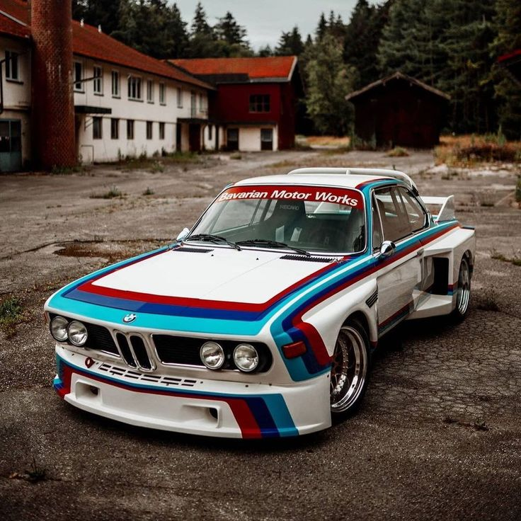

Allgemeine Informationen
Produktion: 1968–1975
Karosserie: Coupé
Motoren: Reihensechszylinder-Benzinmotoren
Getriebe: 4- oder 5-Gang-Schaltgetriebe oder 3-Gang-Automatik
Antrieb: Hinterradantrieb

BMW E9 heute
Heute ist der BMW E9 eines der wertvollsten klassischen Fahrzeuge der Marke.
Aufgrund seiner einzigartigen Merkmale,
seines Motorsport-Erbes und seines eleganten Designs ist der E9 bei Sammlern äußerst begehrt.
Wert: Gut erhaltene Modelle erzielen auf Auktionen hohe Preise.
Restauration: Der BMW E9 wird häufig restauriert, wobei der Originalstil
erhalten bleibt, jedoch moderne Elemente zur
Erhöhung der Zuverlässigkeit hinzugefügt werden.
Fazit:
Der BMW E9 bleibt ein Symbol für Eleganz, Geschwindigkeit und technologische
Exzellenz. Dieses Fahrzeug legte den
Grundstein für viele Generationen sportlicher BMWs und bewahrte seinen besonderen Platz in der
Geschichte der Marke.
Der BMW E9 ist nicht nur ein Auto, sondern ein Kultobjekt und ein zeitloses Beispiel für Ingenieurskunst
und Design.
Der BMW E9 war mit einer Reihe von Reihensechszylinder-Motoren der M30-Serie
ausgestattet, die zu den langlebigsten und
erfolgreichsten Motoren in der Geschichte von BMW gehören. Diese Motoren wurden nicht nur für ihre
Zuverlässigkeit und
Leistungsfähigkeit, sondern auch für ihre Laufruhe und das sportliche Fahrerlebnis geschätzt.
3. BMW 3.0 CSL (1972–1975)
Motorcode: M30B30 (früh) / M30B32 (spät)
Hubraum: 2.985 cm³ (später 3.153 cm³ in einigen Versionen)
Leistung:
Standardversion: 180 PS bis 200 PS
„Batmobil“-Versionen: 206 PS (151 kW)
Kraftstoffversorgung: Einspritzsystem (Bosch) bei späteren Modellen
Besonderheit: Für den Motorsport-Einsatz wurde der Motor leicht
modifiziert, um höhere Leistungen zu erzielen,
insbesondere bei Langstreckenrennen.
Technische Details des M30-Motors
1. Reihensechszylinder-Bauweise:
Die „Big Six“-Motoren von BMW zeichneten sich durch ihre
außergewöhnliche Laufruhe aus, die durch die perfekte
Auswuchtung eines Reihen-Sechszylinders erreicht wurde.
2. Kurbelgehäuse aus Gusseisen:
Robust und langlebig, ideal für hohe Beanspruchungen.
3. Aluminium-Zylinderkopf:
Reduzierte das Gewicht und optimierte die Wärmeableitung.
Eine obenliegende Nockenwelle (OHC) mit zwei Ventilen pro Zylinder.
Der Motor war für seine lineare Leistungsentfaltung und die Fähigkeit,
hohe Drehzahlen problemlos zu erreichen, bekannt.
Beim CSi sorgte die damals fortschrittliche Einspritzanlage für eine
präzisere Steuerung des Kraftstoffgemischs und eine
verbesserte Effizienz.
Besonderheiten des Motors BMW E9
1. Harmonische Leistungsentfaltung:
Der M30-Motor bot ein außergewöhnlich breites nutzbares Drehmomentband,
wodurch sowohl im niedrigen Drehzahlbereich als
auch bei hohen Geschwindigkeiten eine kraftvolle Beschleunigung gewährleistet war.
Viele der originalen M30-Motoren aus der E9-Serie laufen selbst nach
Jahrzehnten noch zuverlässig und sind bekannt für
ihre hohe Laufleistung (häufig über 500.000 km mit regelmäßiger Wartung).
Der 3.0 CSL mit seinem M30-Motor war nicht nur auf der Straße, sondern
auch auf der Rennstrecke erfolgreich, was die
Motorsport-DNA dieses Motors unterstreicht.
Der M30-Motor bildete die Basis für viele weitere BMW-Modelle und
konnte leicht für unterschiedliche Anforderungen
angepasst werden, vom komfortablen Straßenfahrzeug bis hin zum leistungsstarken Rennwagen.
Klang und Fahrerlebnis
Der Motor des BMW E9 wird oft für seinen einzigartigen Klang gelobt:
ein tiefes, sonores Brummen im unteren
Drehzahlbereich und ein kraftvolles Heulen bei hohen Drehzahlen. Zusammen mit der präzisen Gasannahme
und dem linearen
Drehmomentverlauf vermittelte der M30-Motor ein unvergleichliches Fahrerlebnis, das sowohl entspanntes
Cruisen als auch
sportliches Fahren ermöglichte.
BMW M30: Eine Legende
Der M30-Motor gilt als einer der erfolgreichsten und langlebigsten
Motoren von BMW. Mit seiner Kombination aus
fortschrittlicher Technik, Zuverlässigkeit und der Fähigkeit, hohe Leistungen zu erbringen, setzte er
Maßstäbe für
Reihensechszylinder-Motoren.
Der Einsatz im BMW E9 trug maßgeblich dazu bei, diesen Motor als Herzstück vieler klassischer
BMW-Modelle zu etablieren.
BMW E9 im Motorsport
Der BMW E9, insbesondere die Version 3.0 CSL, wurde zum Symbol für den
Erfolg von BMW im Motorsport. Das Modell wurde
speziell für die Teilnahme an der europäischen Tourenwagen-Meisterschaft (ETCC) entwickelt.
Legendärer 3.0 CSL („Batmobil“): Dank aerodynamischer Elemente wie großen
Spoilern und Heckflügel erhielt das Auto den
Spitznamen „Batmobil“.
Siege in der europäischen Tourenwagen-Meisterschaft (1973–1979).
Erfolgreiche Teilnahmen an legendären Rennen wie den 24 Stunden von Le Mans.
Einsätze in der IMSA-Serie in den USA
Rennsporttechnologien für die Straße
Technologien, die im 3.0 CSL verwendet wurden, fanden später ihren Weg in die
Serienmodelle von BMW:
Leichtbau-Karosserie mit Aluminium-Einsatz.
Verbesserte Aerodynamik.
Leistungsstarke und drehfreudige Motoren.